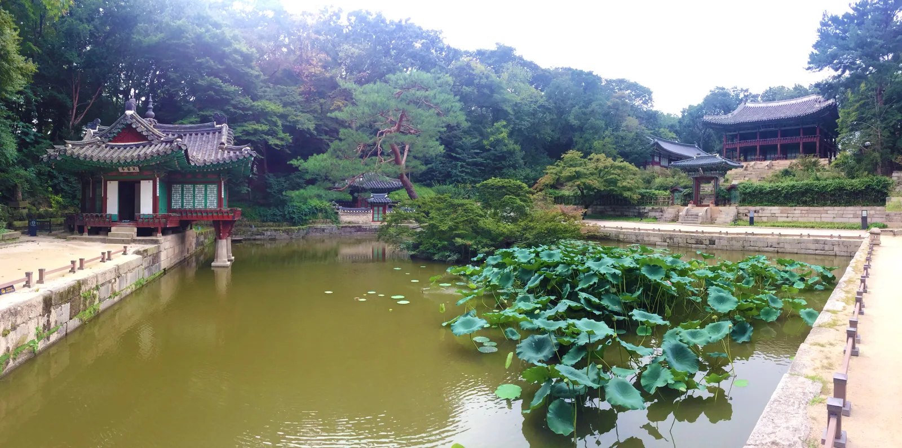
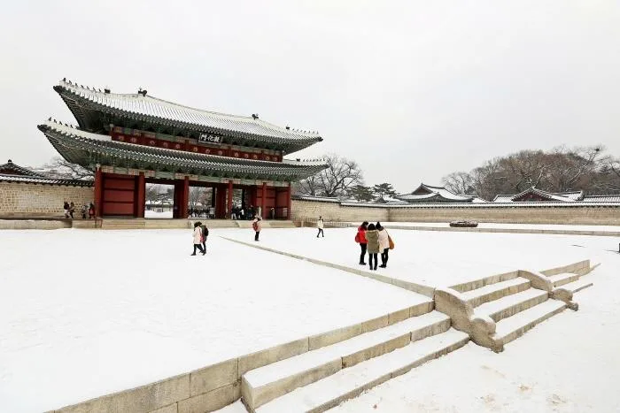
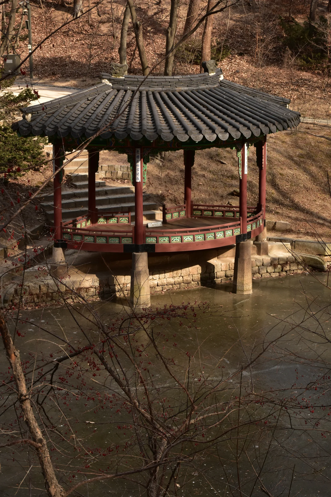

▲ 창덕궁 후원의 부용지와 주합루. 이 구역은 예약한 관람객만 해설사와 함께 들어갈 수 있다 ⓒ Wikimedia Commons (CC BY-SA 4.0)
창덕궁 본궁은 표만 사면 자유롭게 돌아볼 수 있지만, 뒤편의 후원(비원)은 다르다. 이곳은 해설사와 함께하는 예약제 관람으로만 입장할 수 있다. 예약을 놓치면 그날은 후원을 볼 수 없다는 뜻이다.
1. 예약은 6일 전 오전 10시에 열린다
후원 온라인 예약은 관람을 원하는 날짜의 6일 전 오전 10시에 열린다. 이 시각에 정확히 접속해야 원하는 회차를 잡을 확률이 높다. 주말이나 단풍철처럼 수요가 몰리는 시기에는 오픈 직후 마감되는 경우도 흔하다.
예약에 성공했다고 끝이 아니다. 예약 시점으로부터 24시간 안에 결제를 완료해야 하며, 이 시간을 넘기면 예약이 자동으로 취소된다. 예약만 걸어두고 결제를 미루다가 자리를 놓치는 경우가 실제로 발생한다.
2. 회차당 100명 — 절반은 현장 판매

▲ 창덕궁 정문 돈화문. 후원까지 가려면 이 문을 지나 궁 안쪽으로 한참 더 걸어야 한다 ⓒ CarPrism
각 회차는 최대 100명까지 입장할 수 있는데, 이 중 50명은 온라인 사전예약, 나머지 50명은 관람 당일 오전 9시부터 매표소 현장 판매로 배정된다. 온라인 예약을 놓쳤더라도 당일 이른 아침 현장에 가면 기회가 남아 있다는 뜻이다. 다만 인기 있는 시기라면 현장 판매분도 빠르게 소진될 수 있다.
3. 궁궐 입구에서 후원 입구까지 15분
▲ 창덕궁 인정전. 정문에서 이곳을 지나 후원 입구까지 도보로 15분 이상 걸린다 ⓒ CarPrism
예약한 시간에 맞춰 궁궐 정문에 도착하는 것으로는 부족하다. 정문에서 후원 입구까지만 15분 이상 걸리기 때문에, 관람 시작 시간 전까지 후원 입구에 도착하려면 그보다 훨씬 일찍 궁에 들어서야 한다. 해설사와 함께 정해진 시간에 출발하는 방식이라, 늦으면 그 회차 자체를 놓칠 수 있다.
4. 주차 — 도심 한복판, 시간당 6,000원대

▲ 후원의 정자(겨울철 촬영). 후원 곳곳에는 이런 연못과 정자가 이어진다 ⓒ Wikimedia Commons (CC BY 2.0)
| 주차장 | 요금 |
|---|---|
| 창덕궁 제1주차장(운니동) | 시간당 7,200원, 평일 12시간권 11,900원 |
| 원서공원 앞 노상주차장 | 5분당 500원(시간당 약 6,000원) |
| 안국역 4번 출구 인근 | 평일 30분 2,000원, 종일 15,000원 |
창덕궁 일대는 도심 한복판이라 주차 요금이 시간당 6,000~7,200원 수준으로 결코 저렴하지 않다. 지하철 3호선 안국역이 가장 가까운 역이므로, 자차보다 대중교통이 비용과 시간 모두에서 유리한 경우가 많다.
5. 정리
체크포인트
- 후원 예약은 관람 6일 전 오전 10시에 열린다. 이 시각을 놓치지 말아야 한다.
- 예약 후 24시간 안에 결제해야 한다. 미루면 자동 취소된다.
- 온라인 예약을 놓쳤다면 당일 오전 9시 현장 판매(50명)를 노려볼 수 있다.
- 정문에서 후원 입구까지 도보 15분 이상이므로 여유 있게 도착해야 한다.
- 주변 주차는 시간당 6,000원대로 비싸다. 안국역 지하철 이용을 권장한다.